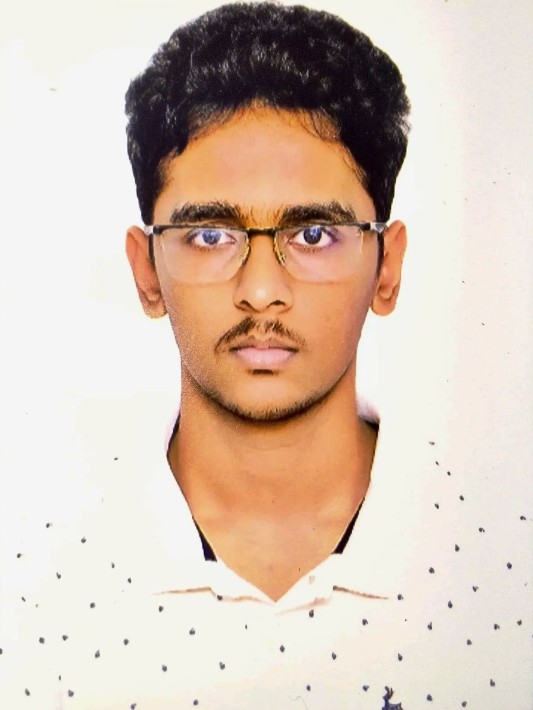

// portfolio · v1.0 · 2026
P. Anuraag
Christopher
First-Year B.Tech CSE Core Student @ VIT Vellore
$ ▌

01 — About Me
Built from first principles.
Voice NoteAbout Me
0:00 / 0:00About Me
Systems programmer.
I'm a first-year CSE student who likes knowing what happens under the abstraction. Instead of reaching for a framework, I'd rather write the socket loop, the allocator or the compressor myself and see where it breaks.
So far that has meant three C++ projects on Linux, each one built to answer a "how does this actually work?" question. Away from the keyboard, Grade 8 piano taught me to practise slowly and deliberately, and I try to code the same way.
Discipline
Grade 8 Piano Performance
Trinity College London
How I Work
- 01
Start from first principles
Read the man page, understand the syscall, then write the code.
- 02
Build small, test often
One micro-part at a time, checked with curl and a browser before moving on.
- 03
Ship it publicly
Every project goes on GitHub so the work can be read, run and criticised.
My Dev Loop
$ g++ -Wall -g server.cpp -o server $ ./server listening on :8080 $ curl -i localhost:8080 HTTP/1.1 200 OK $ gdb ./server
Compile, run, poke it with curl, and drop into gdb when it misbehaves.
02 — Academic Background
From Biology to Computer Science.
Voice NoteAcademic Background
0:00 / 0:00Summary
I came into engineering from a Biology background and switched to Computer Science, and I'm now in the first year of the B.Tech CSE Core programme at VIT Vellore. Alongside coursework, I teach myself systems programming by building projects in C++ on Linux. My focus areas are memory, operating systems and networking.
What Carried Over
- ▸Studying a system by taking it apart
- ▸Methodical, step-by-step analysis
- ▸Questioning assumptions before trusting them
My Path
SCHOOL
Biology
Started in the Biology stream, learning to understand a system by taking it apart.
CLASS 12
98 in Chemistry
Scored 98 in Chemistry by questioning assumptions until the core concepts made sense.
THE SWITCH
Computer Science
Moved from Biology to computers, drawn to how software really runs: memory, processes and networks.
COLLEGE
B.Tech CSE Core
First year at VIT Vellore, learning systems programming through C++ projects on Linux.
03 — Technical Skills
What I know, and what is next.
Voice NoteTechnical Skills
0:00 / 0:00Possessed
To Be Achieved
- ▸Event loops and epoll
- ▸RESP protocol parsing
- ▸Reverse engineering with gdb and Ghidra
- ▸Profiling with perf
- ▸Secure systems and cybersecurity basics
Toolbox
04 — Events Participated
Learning in the room.
Voice NoteEvents Participated
0:00 / 0:00Workshop
Linux Programming & CTF Workshop
Status · ParticipatedHands-on Linux programming and capture-the-flag challenges.
Topics · Linux · CTFUpcoming
Tech fests, hackathons & coding challenges
Planned · next semesterTeaming up and building under time pressure at college tech fests and hackathons.
Status · PlannedWhat I Took Away
Workshops are where I test my understanding against other people's problems. This one pushed me to look beneath the commands and ask what the operating system is actually doing.
05 — Events Organised
Helping organise events, alongside attending them.
Planned · next semester onwardsFlagship · Competitive Programming
CodeClash
$ ./judge --contest codeclash
Planning · next semester3-hour ICPC-style contest, 5–6 problems, solo or pairs, with a beginner-friendly division.
Judge · Codeforces Gym / DOMjudgeWorkshop
Linux & Git Bootcamp
Planned · Hands-onSet up WSL2, learn shell basics and a clean Git workflow in one session.
Audience · First-yearsLive Coding
Build a Server in C++
Idea stageWrite a TCP echo server from scratch with live Q&A on each syscall.
Level · BeginnerMini CTF
Beginner CTF Night
Idea stageEasy Linux and binary puzzles with hints, so first-years can try a CTF safely.
Format · Teams of 2–3Study Group
Systems Study Circle
Planned · WeeklyA small reading group for C++, OS concepts and networking, one topic per meet.
Audience · Open to all years06 — Internships Planned
Where I want to intern.
Voice NoteInternships Planned
0:00 / 0:00Target
2–3 targeted roles
Year 2–4Two to three internships across my second to fourth year.
Status · PlannedFocus
Cybersecurity
Secure systemsHigh-impact cybersecurity companies working on secure systems and low-level code.
Fit · Systems backgroundPreparation
Projects, CTFs, open source
Building the profileShipped C++ projects, CTF practice and public GitHub work are my preparation.
Next · Redis cloneWhat I Would Bring
Career Timeline
NOW
Core CSE coursework · 3 systems projects shipped
NEXT SEM
Redis clone · hackathons & tech fests
YEAR 2–3
Research paper on memory allocation
YEAR 2–4
2–3 cybersecurity internships
07 — Projects Completed
Code that touches the hardware.
Project Walkthrough
Video not found. Place portfolio boosted.mp4 in the same folder as index.html.
08 — Ongoing Projects
Still being built.
Ongoing · In progress
Personal Portfolio Website
This site: a responsive, dependency-light portfolio that grows alongside my projects, research plans and events.
[x] Hero & About [x] Projects & case studies [x] Events & research plans [x] Testimonials [ ] Photos & voice notes
09 — Projects Planned
Next on the list.
Planned · Next
Bare C++ Redis Clone
A from-scratch in-memory key-value store with no external libraries.
$ redis-cli -p 6380 > SET key "hello" OK > GET key "hello"
Planned Milestones
01
Key-value store
Hash table with SET, GET and DEL.
02
RESP parser
Read commands sent by redis-cli.
03
Event loop
epoll to serve many clients at once.
04
Compare
Check behaviour against real Redis.
10 — Publications Planned
Future plans, on paper.
Open access · GitHub-firstVoice NotePublications Planned
0:00 / 0:00Research Idea · 01
Memory Efficiency in Custom Allocators
Status · PlanningBenchmark my pool allocator against malloc for speed and fragmentation.
Target · Year 2–3Research Idea · 02
Reverse Engineering Basics
Status · ExploringTeardown notes on small binaries I write myself, using gdb, objdump and Ghidra.
Tools · gdb · GhidraWrite-up · 03
What Really Happens in accept()
Status · DraftingTrace my HTTP server with strace and map every syscall to a line of code.
Format · Blog + GitHubResearch Idea · 04
Cache-Friendly Data Structures
Status · ReadingCompare contiguous vs linked layouts and measure cache misses with perf.
Tools · perf · g++Publication Pipeline
01 · NOW
Idea & reading list
02
Prototype in C++
03
Benchmark & analyse
04
Open-source write-up
11 — Patents Planned
System information, open source first.
Nothing filed · ideas onlyVoice NotePatents Planned
0:00 / 0:00Concept · System Info
Memory Fragmentation Profiler
Status · ConceptRead /proc/meminfo and /proc/buddyinfo to show how fragmented system memory is, live.
Source · /procConcept · System Info
Lightweight System Info Daemon
Status · ConceptA tiny C++ daemon that samples CPU, memory and process stats from /proc with minimal overhead.
Lang · C++ · LinuxConcept · Security
Syscall Footprint Mapper
Status · ConceptUse strace output to show which files, sockets and memory a program touches.
Use · Security auditConcept · Memory
Pressure-Aware Memory Pool
Status · ConceptA pool allocator that resizes itself using live memory information from the OS.
Builds on · Pool allocatorApproach
Prototype in the open first, then check prior art before any filing.
These are early ideas around reading and using system information. The plan stays open-source first, and a formal patent would only be explored if a prototype proves genuinely new.
$ head -3 /proc/meminfo
MemTotal: … kB
MemFree: … kB
MemAvailable: … kB
12 — Testimony
What others say.
3 testimonialsTechnical & Systems Focus
During the workshop, Anuraag stood out for his insistence on understanding what happens under the hood. While most students rely on surface-level commands, he was asking about file descriptors, syscalls, and socket lifecycles. His drive to build systems from first principles in C++ is rare for a first-year student.
Prasanna Krishnan
Linux Programming & CTF Workshop Organiser
Linux WorkshopPractice, Discipline & Artistry
Mastering Trinity Grade 8 Piano requires immense patience, ear training, and deliberate practice—traits Anuraag brings to everything he touches. Whether tackling complex Chopin études or transcribing anime arrangements by ear, his analytical approach to music reflects the deep focus and discipline of a true craftsman.
Abhinand
Piano Educator
Piano TeacherAcademic Rigor & Work Ethic
Anuraag demonstrated outstanding academic rigor and analytical precision in Class 12, scoring an exceptional 98 in Chemistry. He approaches complex topics methodically, questioning assumptions until he understands the underlying core concepts. That dedication and intellectual curiosity will serve him well in engineering.
Samuel John
Class 12 Chemistry Faculty
Class 12 Chemistry Teacher13 — Contact